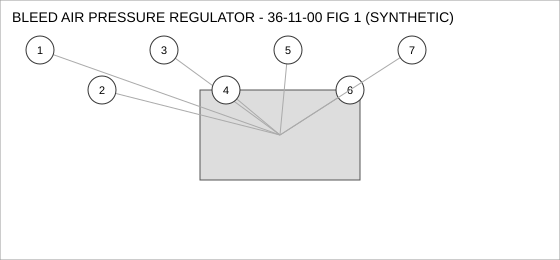
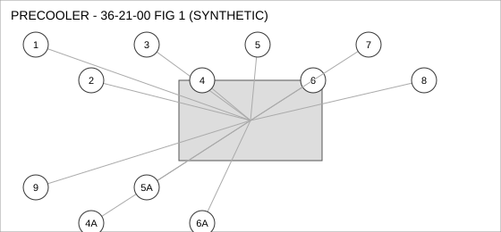
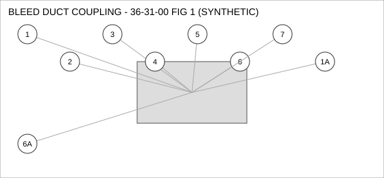
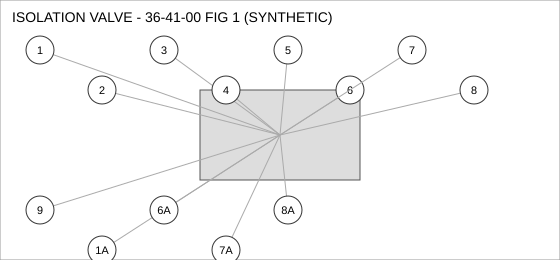

Document type: IPC | Revision: 15 | Fleet: B737
| CODE | AIRCRAFT |
|---|---|
| A | 737-700 |
| B | 737-800 |
| C | 737-MAX8 |

| FIG ITEM | PART NUMBER | NOMENCLATURE | EFFECT | UPA |
|---|---|---|---|---|
| 1 | 162-23566-26 | BOLT, BLEED AIR PRESSURE REGULATOR | A | 1 |
| 2 | 65-15130-08 | HOSE ASSEMBLY, BLEED AIR PRESSURE REGULATOR | ALL | 2 |
| 3 | 285-30807-12 | SEAL - FLANGE, BLEED AIR PRESSURE REGULATOR | ALL | 1 |
| 4 | 69-98984-20 | ACTUATOR - LINEAR, BLEED AIR PRESSURE REGULATOR | ALL | 1 |
| 5 | 60-53213-04 | NUT - SELF-LOCKING, BLEED AIR PRESSURE REGULATOR | C | 4 |
| 6 | 69-96057-20 | WASHER - LOCK, BLEED AIR PRESSURE REGULATOR | ALL | 1 |
| 7 | 65-55851-10 | FILTER ELEMENT, BLEED AIR PRESSURE REGULATOR | ALL | 2 |

| FIG ITEM | PART NUMBER | NOMENCLATURE | EFFECT | UPA |
|---|---|---|---|---|
| 1 | 65-54791-25 | COUPLING - QUICK DISCONNECT, PRECOOLER | ALL | 2 |
| 2 | 65-30308-03 | WASHER - LOCK, PRECOOLER | ALL | 1 |
| 3 | 285-79013-02 | SENSOR - TEMPERATURE, PRECOOLER | ALL | 1 |
| 4 | 162-30218-06 | CONNECTOR - ELECTRICAL, PRECOOLER | ALL | 1 |
| 4A | 162-58655-18 | CONNECTOR - ELECTRICAL, PRECOOLER | ALL | 1 |
| ALTERNATE FOR 162-30218-06. PARTS ARE INTERCHANGEABLE. | ||||
| 5 | 65-67366-02 | SOLENOID, PRECOOLER | A B | 2 |
| 5A | 69-68893-29 | SOLENOID, PRECOOLER | A B | 2 |
| INTERCHANGEABLE WITH 65-67366-02 WHEN SB 36-2217 IS EMBODIED. | ||||
| 6 | 65-68222-20 | PUMP - TRANSFER, PRECOOLER | C | 1 |
| 6A | 162-55820-01 | PUMP - TRANSFER, PRECOOLER | C | 1 |
| ALTERNATE FOR 65-68222-20. PARTS ARE INTERCHANGEABLE. | ||||
| 7 | 65-79993-08 | VALVE - CHECK, PRECOOLER | A B | 1 |
| 8 | 65-58213-22 | SEAL - O-RING, PRECOOLER | B C | 4 |
| 9 | 69-60052-17 | FILTER ELEMENT, PRECOOLER | ALL | 4 |

| FIG ITEM | PART NUMBER | NOMENCLATURE | EFFECT | UPA |
|---|---|---|---|---|
| 1 | 69-71925-23 | PUMP - TRANSFER, BLEED DUCT COUPLING | ALL | 1 |
| SUPERSEDED BY 60-78614-12 | ||||
| 1A | 60-78614-12 | PUMP - TRANSFER, BLEED DUCT COUPLING | ALL | 1 |
| SUPERSEDES 69-71925-23. 69-71925-23 IS NOT INTERCHANGEABLE WITH THIS PART (ONE-WAY). | ||||
| 2 | 285-10688-29 | CLAMP - V-BAND, BLEED DUCT COUPLING | ALL | 1 |
| 3 | 65-81932-24 | VALVE - CHECK, BLEED DUCT COUPLING | ALL | 4 |
| 4 | 69-41147-10 | ACTUATOR - LINEAR, BLEED DUCT COUPLING | ALL | 1 |
| 5 | 285-69914-03 | SENSOR - PRESSURE, BLEED DUCT COUPLING | ALL | 1 |
| 6 | 60-92831-17 | HOSE ASSEMBLY, BLEED DUCT COUPLING | ALL | 4 |
| 6A | 60-55193-08 | HOSE ASSEMBLY, BLEED DUCT COUPLING | ALL | 4 |
| ALTERNATE FOR 60-92831-17. PARTS ARE INTERCHANGEABLE. | ||||
| 7 | 69-66261-01 | FILTER ELEMENT, BLEED DUCT COUPLING | C | 4 |

| FIG ITEM | PART NUMBER | NOMENCLATURE | EFFECT | UPA |
|---|---|---|---|---|
| 1 | 162-92802-06 | ACTUATOR - LINEAR, ISOLATION VALVE | C | 1 |
| 1A | 69-96628-10 | ACTUATOR - LINEAR, ISOLATION VALVE | C | 1 |
| INTERCHANGEABLE WITH 162-92802-06 (TWO-WAY). | ||||
| 2 | 162-14847-10 | FILTER ELEMENT, ISOLATION VALVE | C | 1 |
| 3 | 60-51365-10 | VALVE - SHUTOFF, ISOLATION VALVE | A B | 4 |
| 4 | 285-72049-09 | PUMP - TRANSFER, ISOLATION VALVE | A | 1 |
| 5 | 69-16265-28 | GASKET, ISOLATION VALVE | ALL | 1 |
| 6 | 69-67272-29 | COUPLING - QUICK DISCONNECT, ISOLATION VALVE | ALL | 2 |
| 6A | 285-67008-09 | COUPLING - QUICK DISCONNECT, ISOLATION VALVE | A | 2 |
| ALTERNATE FOR 69-67272-29 ON 737-700 ONLY. | ||||
| 7 | 162-54438-06 | SEAL - O-RING, ISOLATION VALVE | ALL | 2 |
| 7A | 69-77251-26 | SEAL - O-RING, ISOLATION VALVE | ALL | 2 |
| ALTERNATE FOR 162-54438-06 AFTER INCORPORATION OF SB 36-2217. | ||||
| 8 | 285-44959-26 | CONNECTOR - ELECTRICAL, ISOLATION VALVE | ALL | 1 |
| 8A | 162-14561-05 | CONNECTOR - ELECTRICAL, ISOLATION VALVE | ALL | 1 |
| INTERCHANGEABLE WITH 285-44959-26 WHEN SB 36-2217 IS EMBODIED. | ||||
| 9 | 162-88964-27 | SWITCH - PRESSURE, ISOLATION VALVE | ALL | 1 |